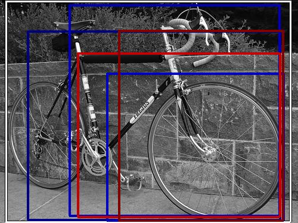

0.418236

0.427277

0.451571

0.455672

0.521186

0.522644

0.524703

0.539597

0.582390

0.585754
| Target image | 0.418236 | 0.427277 | 0.451571 | 0.455672 | 0.521186 | 0.522644 | 0.524703 | 0.539597 | 0.582390 | 0.585754 |
| Target image  |  56722.953125 |  31890.025391 |  19360.945312 |  17250.000000 |  14147.646484 |  12972.250000 |  12862.401367 |  11870.762695 |  9543.286133 |  7104.753418 |
Target image |  34924.015625 |  33033.890625 |  31386.166016 |  28024.900391 |  23532.691406 |  21733.701172 |  19792.707031 |  18982.099609 |  18939.447266 |  12859.665039 |
Target image |  51380.566406 |  33276.964844 |  29959.121094 |  28798.380859 |  25696.164062 |  22020.015625 |  16138.546875 |  13524.253906 |  12730.058594 |  11868.166992 |
Target image |  37550.796875 |  33931.242188 |  30402.732422 |  28702.710938 |  22510.757812 |  19702.685547 |  18351.394531 |  16383.079102 |  15191.488281 |  14754.920898 |